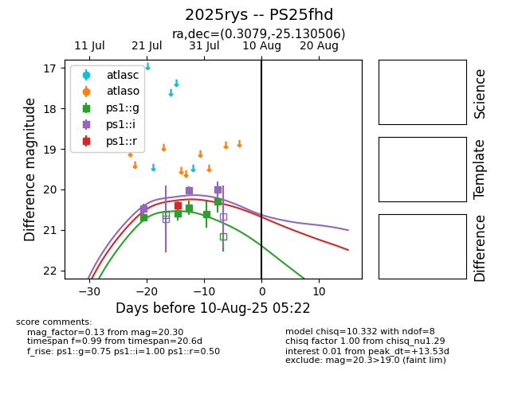

Target 2025rys at 2025-08-10 05:22, see:
TNS: wis-tns.org/object/2025rys
YSE: ziggy.ucolick.org/yse/transient_detail/2025rys
alt names
2025rys (yse,tns)
PS25fhd (panstarrs)
coordinates:
equatorial (ra, dec) = (0.3079,-25.13051)
galactic (l, b) = (40.1717,-78.56070)
photometry
last ps1::g=20.30, ps1::i=20.00, ps1::r=20.40
5 ps1::g, 3 ps1::i, 1 ps1::r detections
